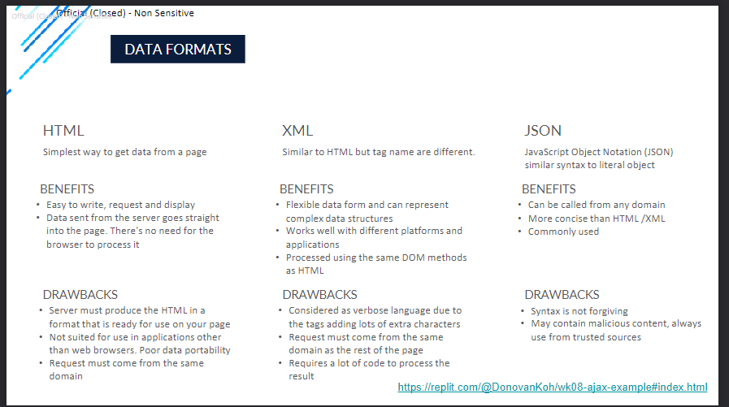

Stuff I learnt in Week 8.
For week 8, I learnt about APIs and how to fetch data
What is AJAX?
AJAX stands for Asynchronous JavaScript and XML. It is a technique used to send and retrieve data from a server without reloading the entire web page. This allows for more dynamic and interactive websites.
How to use AJAX to fetch data from an API
To fetch data from an API using AJAX, you can use the XMLHttpRequest object in JavaScript. This object allows you to send HTTP requests to a server and handle the response. You can use the open() method to specify the type of request (GET or POST) and the URL of the API, and the send() method to send the request. You can then use the onreadystatechange event to handle the response from the server and update the web page with the retrieved data.

Some examples of data formats
How to use the fetch() method to fetch data from an API
How to use the fetch() method to fetch data from an API
To fetch data from an API using the fetch() method, you can simply use the following syntax:
fetch(url)
.then(response => response.json())
.then(data => {
// Handle the retrieved data here
})
.catch(error => {
// Handle any errors that occur during the fetch request
});
The fetch() method sends a GET request to the specified URL and returns a Promise that resolves to the Response object. You can then use the .json() method on the Response object to parse the response as JSON. Finally, you can access the retrieved data in the second .then() block and handle any errors in the .catch() block.